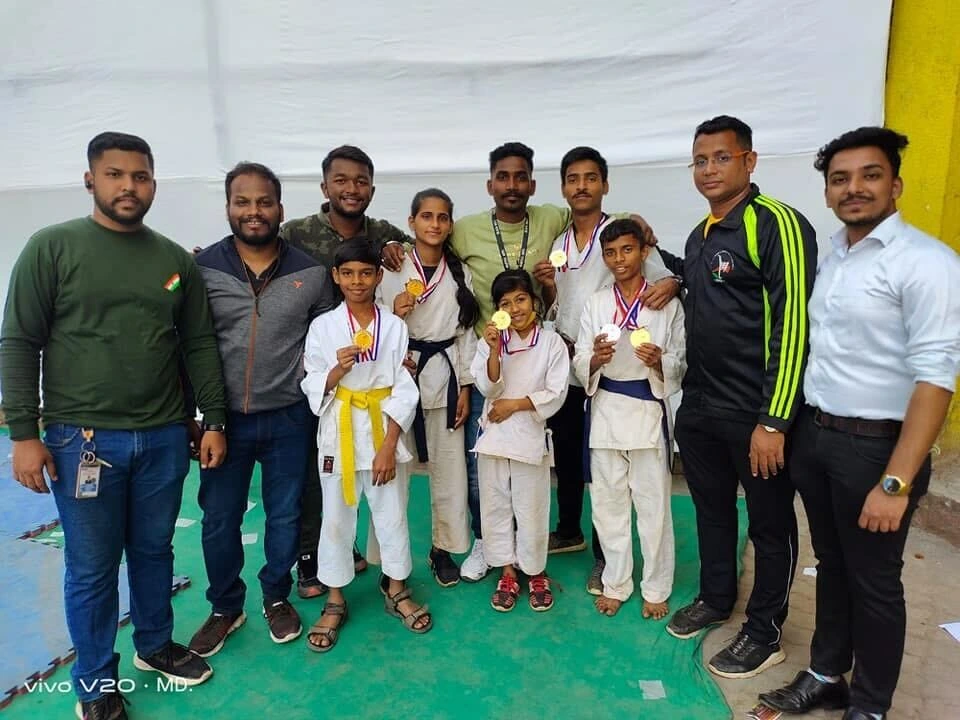
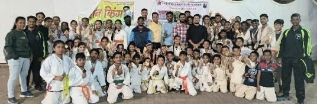
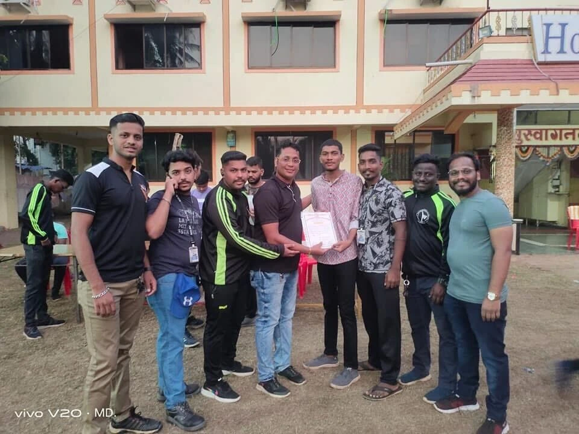
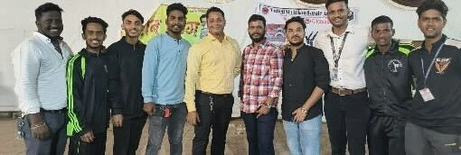

Events & karate camps
More time to practise.
More room to grow.
Twice a year, we bring our students together for an immersive martial arts experience beyond their regular routines—building skill, discipline and confidence on and off the mat.
Explore our camps
Our seasonal camps.
An opportunity to step away from the usual routine and give focused time to training, teamwork and personal growth.
Summer Karate Camp
A high-energy program designed to keep kids active, focused and disciplined during their summer break.
Movement · Focus · Consistent practice
Summer enrollment informationWinter Karate Camp
An intensive training retreat aimed at sharpening skills, building endurance and finishing the year with renewed confidence.
Technique · Endurance · Continued progress
Winter enrollment informationEnrollments open one month before each season. Dates, venue and participation details for the next camp are yet to be announced.
Camp activities
Purposeful practice, healthy competition and recognition for the work students put in.

Academy archive photograph; season not specified.
Belt Grading & Level-Ups
A chance to demonstrate dedication, technique and progress. Students are assessed for belt advancement; moving to the next level depends on meeting the grading requirements.
Tournaments & Competitions
Supervised sparring and kata competitions give students a constructive setting to test their techniques, develop composure and practise a healthy competitive spirit.
Awards & Prize Distribution
Trophies, medals and certificates celebrate top performers and dedicated students, recognising effort and giving young practitioners encouragement to keep improving.
Real-World Self-Defense
Practical self-defense training develops awareness, avoidance, control and appropriate responses. The focus is on making safer decisions and seeking help—not a guarantee of protection in every situation.
Personal Growth & Discipline
Beyond physical practice, camp encourages focus, resilience, leadership and respect. Students learn to take responsibility, support one another and build confidence through consistent effort.
Event photo gallery.
Photographs supplied by Royal Sports Academy. Explore the full frames from gatherings, presentations and moments together.
8 supplied files · 7 unique photographs. One exact duplicate is shown once; different views of the same gathering are retained. Original image quality varies. Photographs are not assigned to a particular camp season or date.
{kind=link}

.jpg)
{kind=link}



{kind=link}
{kind=link}

Join the next camp.
Ready to develop your skills? Join us at the next Royal Sports Academy camp and continue your martial arts journey.
Enquire about campsEnrollment information
- When to enquire
- Enrollments open one month before each summer and winter season.
- Next camp details
- Exact dates, venue, age eligibility and arrangements will be confirmed by the academy.
- Before attending
- A parent or guardian should confirm suitability and participation details for a child. Enquiring does not reserve a place.
This preview is not connected to live camp registration. Regular karate training is free; camp-specific arrangements should be confirmed with the academy.